Боди-хоррор (англ. body horror, букв. «телесный ужас», «телесный хоррор»), известный также как органик-хоррор (organic horror) и биохоррор (biological horror) — поджанр ужасов в кино и литературе ужасов, для которого характерно особое внимание к человеческому телу и его трансформациям. Типичные мотивы боди-хоррора — разнообразные болезни, гниение, паразитизм, мутации и превращения, эксперименты с человеческим телом и создание монстров вроде чудовища Франкенштейна.
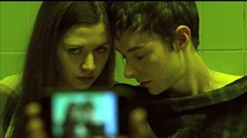
AKA:
Movie: Abducted
Storyline: Jessica and Dave along with three other young couples are kidnapped in Griffith Park by unseen Abductors and must fight to escape certain death only to discover the world will never be the same.
Genres: Horror, Sci-Fi, Thriller
Actor: Trevor Morgan, Tessa Ferrer, Jelly Howie
Director: Lucy Phillips, Glen Scantlebury
Country: USA
Duration: 96 min
Release: 3 September 2013 (USA)
Movie: Altered Perception
Storyline: A drug that alters perceptions during trauma and stress, is being advertised as a cure for socio-political tensions. Several couples volunteer for human trials but end up with more than they bargained for.
Genres: Fantasy, Mystery, Sci-Fi
Actor: Jon Huertas, Jennifer Blanc-Biehn, Mark Burnham
Director: Kate Rees Davies
Duration: 79 min
Release: 4 May 2018 (USA)
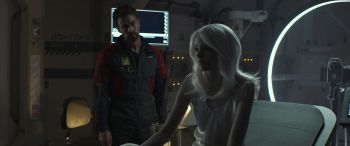
«Мой создатель» (англ. Archive, «архив») — научно-фантастический фильм режиссёра Гэвина Ротери. Главные роли исполнили Тео Джеймс и Стэйси Мартин. Премьера состоялась 10 июля 2020 года.
Cruel and Unusual is a 2014 Canadian surrealistic thriller written by Merlin Dervisevic. It is the debut feature for Merlin Dervisevic, who also directed the film. Starring David Richmond-Peck, Bernadette Saquibal, and Michelle Harrison, the film follows a man wrongly condemned for killing his wife, who finds himself in a mysterious institution where he is sentenced to relive her death for eternity. Distributed by Entertainment One in Canada and Candy Factory Films in the United States, the film was theatrically released on 24 May 2014.
Movie: Dropa
Storyline: The hunt is on as a government assassin comes out of retirement to track down a killer extraterrestrial murdering the former members of his team in this science fiction thriller set in an alternate future America.
Genres: Drama, Sci-Fi, Thriller
Actor: Jason Douglas, David Matranga, James Hong
Director: Wayne Slaten
Duration: 101 min
Release: 6 December 2019 (USA)
«Экзистенция» (англ. eXistenZ) — научно-фантастический/психологический триллер 1999 года режиссёра Дэвида Кроненберга. В главных ролях Джуд Лоу и Дженнифер Джейсон Ли.
Новелизации:
Кристофер Прист написал одноимённый роман для сопровождения фильма «Экзистенция», тема которого имеет много общего c темами его собственных произведений.
Продюсеры фильма, венгры Андраш Хамори (Hámori András) и Роберт Лантош (Lantos Róbert), сообщили, что буквы X и Z выделены не случайно, между ними стоит слово «isten», которое в переводе с венгерского означает «Бог».
«Закат цивилизации» (англ. Extinction) — американский научно-фантастический фильм режиссёра Бена Янга. Премьера фильма состоялась 27 июля 2018 года. Над сценарием фильма работал Эрик Хайссерер, номинант на премию «Оскар» за фильм «Прибытие». Также сценаристами фильма выступили Брэд Кэйн, ранее работавший на сценарием сериалов «Грань» и «Чёрные паруса», и дебютант Спенсер Коэн.
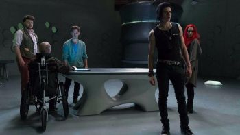
MindGamers is a 2015 Austrian science fiction film directed by Andrew Goth. The film was theatrically released on March 28, 2017 through Terra Mater Factual Studios. The film stars Tom Payne, Dominique Tipper, Sam Neill, Melia Kreiling, Antonia Campbell-Hughes, and Oliver Stark.
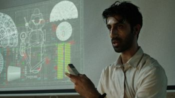
Minor Premise is a 2020 American science-fiction thriller film directed by Eric Schultz, who co-wrote the script alongside Justin Moretto and Thomas Torrey. The film stars Sathya Sridharan, Paton Ashbrook, and Dana Ashbrook.
The film premiered at the Fantasia International Film Festival on August 29, 2020.
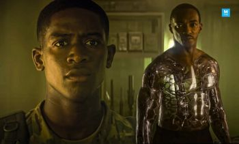
«Смертельная зона» (англ. Outside the Wire) — американский научно-фантастический фильм, режиссёра Микаэля Хофстрёма. Фильм вышел на Netflix 15 января 2021 года.
«Кислород» (англ. Oxygen) — научно-фантастический фильм режиссёра Александра Ажа с Мелани Лоран в главной роли. Премьера фильма состоялась на Netflix 12 мая 2021 года.
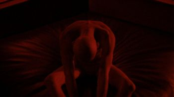
Perfect is a 2018 American science fiction thriller film directed by Eddie Alcazar in his feature length debut and starring Garrett Wareing, Courtney Eaton, Tao Okamoto, Maurice Compte, and Abbie Cornish. The film had its premiere at South by Southwest on March 11, 2018. It was released in the United States on May 17, 2019.
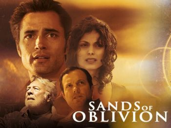
Sands of Oblivion is a 2007 Sci-Fi Channel original movie starring Morena Baccarin, Adam Baldwin, Victor Webster, George Kennedy, Richard Kind and Dan Castellaneta. It was directed by David Flores and premiered July 28, 2007 on the Sci Fi Channel.
Uncanny is a 2015 American science fiction film directed by Matthew Leutwyler and based on a screenplay by Shahin Chandrasoma. It is about the world's first "perfect" artificial intelligence (David Clayton Rogers) that begins to exhibit startling and unnerving emergent behavior when a reporter (Lucy Griffiths) begins a relationship with the scientist (Mark Webber) who created it.
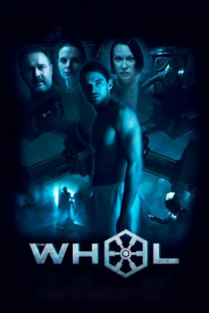
Movie: The Wheel / 2099: The Soldier Protocol
Storyline: Matt volunteers for an experiment that promises to return mobility to his legs but he does not know at what price.
Genres: Action, Sci-Fi
Actor: David Arquette, Jackson Gallagher, Kendal Rae
Director: Dee McLachlan
Country: Australia
Duration: 85 min
Release: 22 October 2019 (Australia)
Movie: Zoo-Head
Storyline: An addict is trapped to live the same day over and over again when he is placed onto an experimental rehabilitation program that involves memory-looping.
Genres: Sci-Fi, Thriller
Actor: Daniel Ahmadi, Hussina Raja, Brian Potter Jr.
Director: Navin Dev
Country: UK
Duration: 80 min
Release: 13 May 2019 (USA)
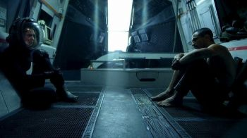
Arrowhead (also released as Alien Arrival) is a 2016 Australian science fiction film by Jesse O'Brien. It stars Kye Cortland as an escaped political prisoner who is recruited by a rebellion to rescue his father from a totalitarian government. During his mission, he crash lands on a desert moon, which he learns has strategic value to both sides of the conflict.
Production:
Arrowhead was based on a short film Melbourne filmmaker Jesse O'Brien shot in 2012. Using this short film, which cost $600, O'Brien started a crowdfunding campaign for a feature version. Although the campaign was unsuccessful, it led to industry attention; TV1 offered $140,000 in funding, and O'Brien received another $40,000 from a production company started by friends he met at film school. Foxtel subsequently discontinued TV1, but they reassured O'Brien they were still committed to funding the film. Shooting took place in Coober Pedy and Sunshine, Victoria, over 22 days. O'Brien said he spend almost the entire budget during production, leaving only $1000 for post-production.
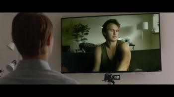
«Дубликат» (англ. Jonathan; Джонатан) — американский научно-фантастический фильм 2018 года режиссёра Билла Оливера. Премьера фильма состоялась 21 апреля 2018 года на Кинофестивале Трайбека. В России фильм вышел 8 ноября 2018 года.
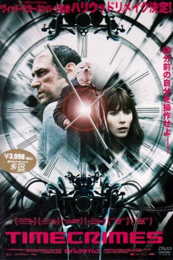
«Временная петля» (исп. Los cronocrímenes, дословно — «Преступления во времени») — испанский фантастический фильм режиссёра Начо Вигалондо.
Награды и номинации:
• 2007 — участие в конкурсной программе Каталонского кинофестиваля.
• 2008 — приз «Чёрный тюльпан» на фестивале фантастических фильмов в Амстердаме.
• 2008 — участие в Чикагском кинофестивале в категории «После заката».
• 2008 — второе место на кинофестивале Fant-Asia.
• 2008 — приз зрительских симпатий на Филадельфийском кинофестивале
• 2009 — номинация на премию «Гойя» за лучший режиссёрский дебют (Начо Вигалондо).
• 2009 — приз кинофестиваля в Жерармере за лучший видеофильм.
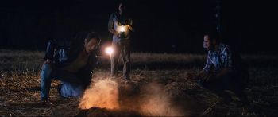
Encounter is an American science fiction film starring Luke Hemsworth, Anna Hutchison, Tom Atkins, Glenn Keogh, Vincent M. Ward, Cheryl Texiera and Christopher Showerman, and is written and directed by Paul J. Salamoff.
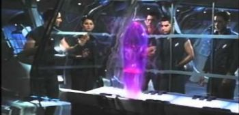
«Сверхновая» (англ. Supernova) — американо-швейцарский фантастический триллер 2000 года режиссёров Уолтера Хилла, Фрэнсиса Форда Копполы и Джека Шолдера (последние двое в титрах не указаны).
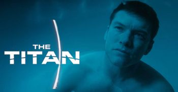
«Титан» — научно-фантастический триллер 2018 года, в котором снялись Сэм Уортингтон, Тейлор Шиллинг, Том Уилкинсон.
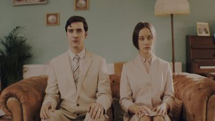
Movie: Caught
Storyline: The film tells the story of a journalist couple who invite a man and woman into their idyllic village home, but what begins with an informal interview descends into a nightmarish fight for survival.
Genres: Horror, Sci-Fi
Actor: April Pearson, Cian Barry, Aaron Davis
Director: Jamie Patterson
Duration: 86 min
Release: 30 March 2018 (USA)
Сквозь Горизонт (англ. Event Horizon) — научно-фантастический фильм ужасов режиссёра Пола Андерсона.
Слоган фильма: «Беспредельный космос. Беспредельный ужас» (англ. «Infinite space. Infinite terror»).
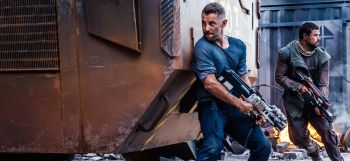
В фильме "Дитя Осириса: научная фантастика, выпуск 1" события разворачиваются в далеком будущем. Колонизация космоса идет полным ходом, с учетом того, что есть факты, указывающие на существование других цивилизаций. Инопланетная раса берет под свой контроль колонизацию, так как все проблемы таким образом будут быстро разрешены. Параллельно этому главные герои ведут непрерывную борьбу со своими страхами, направленными на боязнь других цивилизаций, которые имеют свои проблемы, начинающиеся с самого дна. Развитие протекает своим чередом, но образуются обстоятельства, угрожающие мирному существованию не только во Вселенной.
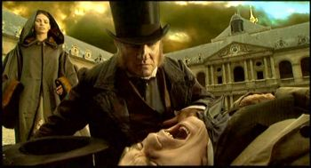
«Видок» (фр. Vidocq) — фильм режиссёра Жана-Кристофа Комара (творческий псевдоним «Питоф»), выпущенный в 2001 году, в котором знаменитый французский сыщик Видок (историческая личность) борется с колдуном по прозвищу Алхимик, крадущим чужие души. Действие фантастического фильма происходит на фоне исторических событий — Июльской революции. Фильм является первым фантастическим фильмом, снятым полностью на цифровой носитель с разрешением HDTV.